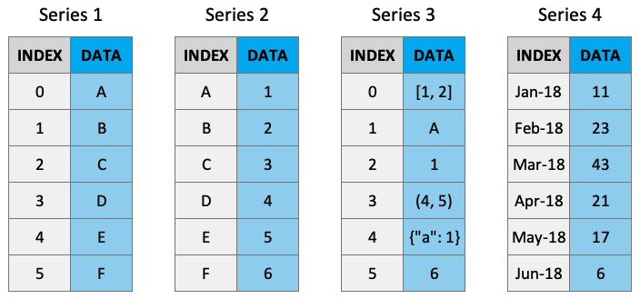

Introduction to Pandas
Introduction to Pandas¶
Pandas is most popular Python library for tabular data structures. You can think of Pandas as an extremely powerful version of Excel (but free and with a lot more features!)
Pandas can be installed using conda:
conda install pandas
We usually import pandas with the alias pd. You’ll see these two imports at the top of most data science workflows:
import pandas as pd
Pandas Series¶
What are Series?¶
A Series is like an list/array but with labels. They are strictly 1-dimensional and can contain any data type (integers, strings, floats, objects, etc), including a mix of them. Series can be created from a scalar, a list, ndarray or dictionary using pd.Series() (note the captial “S”). Here are some example series:

Creating Series¶
By default, series are labelled with indices starting from 0. For example:
pd.Series(data = [-5, 1.3, 21, 6, 3])
0 -5.0
1 1.3
2 21.0
3 6.0
4 3.0
dtype: float64
But you can add a custom index:
pd.Series(data = [-5, 1.3, 21, 6, 3],
index = ['a', 'b', 'c', 'd', 'e'])
a -5.0
b 1.3
c 21.0
d 6.0
e 3.0
dtype: float64
You can create a Series from a dictionary:
pd.Series(data = {'a': 10, 'b': 20, 'c': 30})
a 10
b 20
c 30
dtype: int64
Series Characteristics¶
Series can be given a name attribute. I almost never use this but it might come up sometimes:
s = pd.Series(data = [34, 56, 45, 75, 90], name='random_series')
s
0 34
1 56
2 45
3 75
4 90
Name: random_series, dtype: int64
s.name
'random_series'
s.rename("another_name")
0 34
1 56
2 45
3 75
4 90
Name: another_name, dtype: int64
You can access the index labels of your series using the .index attribute:
s.index
RangeIndex(start=0, stop=5, step=1)
Pandas DataFrames¶
What are DataFrames?¶
Pandas DataFrames are you’re new best friend. They are like the Excel spreadsheets you may be used to. DataFrames are really just Series stuck together! Think of a DataFrame as a dictionary of series, with the “keys” being the column labels and the “values” being the series data:

Creating DataFrames¶
Dataframes can be created using pd.DataFrame() (note the capital “D” and “F”). Like series, index and column labels of dataframes are labelled starting from 0 by default:
pd.DataFrame([[1, 2, 3],
[4, 5, 6],
[7, 8, 9]])
| 0 | 1 | 2 | |
|---|---|---|---|
| 0 | 1 | 2 | 3 |
| 1 | 4 | 5 | 6 |
| 2 | 7 | 8 | 9 |
We can use the index and columns arguments to give them labels:
pd.DataFrame([[1, 2, 3],
[4, 5, 6],
[7, 8, 9]],
index = ["R1", "R2", "R3"],
columns = ["C1", "C2", "C3"])
| C1 | C2 | C3 | |
|---|---|---|---|
| R1 | 1 | 2 | 3 |
| R2 | 4 | 5 | 6 |
| R3 | 7 | 8 | 9 |
There are so many ways to create dataframes. We can create them from dictionaries
pd.DataFrame({"C1": [1, 2, 3],
"C2": ['A', 'B', 'C']},
index=["R1", "R2", "R3"])
| C1 | C2 | |
|---|---|---|
| R1 | 1 | A |
| R2 | 2 | B |
| R3 | 3 | C |
Here’s a table of the main ways you can create dataframes (see the Pandas documentation for more):
Create DataFrame from |
Code |
|---|---|
Lists of lists |
|
ndarray |
|
Dictionary |
|
List of tuples |
|
Series |
|
Indexing and Slicing DataFrames¶
There are several main ways to select data from a DataFrame:
[].loc[].iloc[]Boolean indexing
.query()
df = pd.DataFrame({"Name": ["Harry", "George", "Lucas"],
"Language": ["Python", "Python", "R"],
"Confidence": [9, 4, 7]})
df
| Name | Language | Confidence | |
|---|---|---|---|
| 0 | Harry | Python | 9 |
| 1 | George | Python | 4 |
| 2 | Lucas | R | 7 |
Indexing with []¶
Select columns by single labels, lists of labels, or slices:
df['Name'] # returns a series
0 Harry
1 George
2 Lucas
Name: Name, dtype: object
df[['Name']] # returns a dataframe!
| Name | |
|---|---|
| 0 | Harry |
| 1 | George |
| 2 | Lucas |
df[['Name', 'Language']]
| Name | Language | |
|---|---|---|
| 0 | Harry | Python |
| 1 | George | Python |
| 2 | Lucas | R |
You can only index rows by using slices, not single values (but not recommended, see preferred methods below).
df[0] # doesn't work
---------------------------------------------------------------------------
KeyError Traceback (most recent call last)
/Applications/anaconda3/lib/python3.8/site-packages/pandas/core/indexes/base.py in get_loc(self, key, method, tolerance)
2894 try:
-> 2895 return self._engine.get_loc(casted_key)
2896 except KeyError as err:
pandas/_libs/index.pyx in pandas._libs.index.IndexEngine.get_loc()
pandas/_libs/index.pyx in pandas._libs.index.IndexEngine.get_loc()
pandas/_libs/hashtable_class_helper.pxi in pandas._libs.hashtable.PyObjectHashTable.get_item()
pandas/_libs/hashtable_class_helper.pxi in pandas._libs.hashtable.PyObjectHashTable.get_item()
KeyError: 0
The above exception was the direct cause of the following exception:
KeyError Traceback (most recent call last)
<ipython-input-16-feb9bd85061b> in <module>
----> 1 df[0] # doesn't work
/Applications/anaconda3/lib/python3.8/site-packages/pandas/core/frame.py in __getitem__(self, key)
2900 if self.columns.nlevels > 1:
2901 return self._getitem_multilevel(key)
-> 2902 indexer = self.columns.get_loc(key)
2903 if is_integer(indexer):
2904 indexer = [indexer]
/Applications/anaconda3/lib/python3.8/site-packages/pandas/core/indexes/base.py in get_loc(self, key, method, tolerance)
2895 return self._engine.get_loc(casted_key)
2896 except KeyError as err:
-> 2897 raise KeyError(key) from err
2898
2899 if tolerance is not None:
KeyError: 0
df[0:1] # does work
| Name | Language | Confidence | |
|---|---|---|---|
| 0 | Harry | Python | 9 |
df[1:] # does work
| Name | Language | Confidence | |
|---|---|---|---|
| 1 | George | Python | 4 |
| 2 | Lucas | R | 7 |
Indexing with .loc and .iloc¶
Pandas created the methods .loc[] and .iloc[] as more flexible alternatives for accessing data from a dataframe. Use df.iloc[] for indexing with integers and df.loc[] for indexing with labels. These are typically the recommended methods of indexing in Pandas.
df
| Name | Language | Confidence | |
|---|---|---|---|
| 0 | Harry | Python | 9 |
| 1 | George | Python | 4 |
| 2 | Lucas | R | 7 |
First we’ll try out .iloc which accepts integers as references to rows/columns:
df.iloc[0]
Name Harry
Language Python
Confidence 9
Name: 0, dtype: object
df.iloc[0:2] # slicing returns a dataframe
| Name | Language | Confidence | |
|---|---|---|---|
| 0 | Harry | Python | 9 |
| 1 | George | Python | 4 |
df.iloc[2, 1] # returns the indexed object
'R'
df.iloc[[0, 1], [1, 2]] # returns a dataframe
| Language | Confidence | |
|---|---|---|
| 0 | Python | 9 |
| 1 | Python | 4 |
Now let’s look at .loc which accepts labels as references to rows/columns:
df.loc[:, 'Name']
0 Harry
1 George
2 Lucas
Name: Name, dtype: object
df.loc[:, 'Name':'Language']
| Name | Language | |
|---|---|---|
| 0 | Harry | Python |
| 1 | George | Python |
| 2 | Lucas | R |
df.loc[[0, 2], ['Language']]
| Language | |
|---|---|
| 0 | Python |
| 2 | R |
Sometimes we want to use a mix of integers and labels to reference data in a dataframe. The easiest way to do this is to use .loc[] with a label then use an integer in combinations with .index or .columns:
df.index
RangeIndex(start=0, stop=3, step=1)
df.columns
Index(['Name', 'Language', 'Confidence'], dtype='object')
df.loc[df.index[0], 'Confidence'] # I want to reference the first row and the column named "Courses"
9
df.loc[2, df.columns[1]] # I want to reference row "2" and the second column
'R'
Boolean indexing¶
Just like with series, we can select data based on boolean masks:
df[df['Confidence'] > 5]
| Name | Language | Confidence | |
|---|---|---|---|
| 0 | Harry | Python | 9 |
| 2 | Lucas | R | 7 |
df[df['Name'] == "Lucas"]
| Name | Language | Confidence | |
|---|---|---|---|
| 2 | Lucas | R | 7 |
Indexing with .query()¶
Boolean masks work fine, but we can also use the .query() method for selecting data. df.query() is a powerful tool for filtering data. It has an odd syntax, it is more like SQL - df.query() accepts a string expression to evaluate and it “knows” the names of the columns in your dataframe.
df.query("Confidence > 4 & Language == 'Python'")
| Name | Language | Confidence | |
|---|---|---|---|
| 0 | Harry | Python | 9 |
Note the use of single quotes AND double quotes above, lucky we have both in Python! Compare this to the equivalent boolean indexing operation and you can see that .query() is much more readable, especially as the query gets bigger!
df[(df['Confidence'] > 4) & (df['Language'] == 'Python')]
| Name | Language | Confidence | |
|---|---|---|---|
| 0 | Harry | Python | 9 |
Query also allows you to reference variable in the current workspace using the @ symbol:
confidence_threshold = 4
df.query("Confidence > @confidence_threshold")
| Name | Language | Confidence | |
|---|---|---|---|
| 0 | Harry | Python | 9 |
| 2 | Lucas | R | 7 |
Reading/Writing Data From External Sources¶
.csv files¶
A lot of the time we will be loading .csv files for use in pandas. We can use the pd.read_csv() function for this. In the remaining sections of this chapter we will work with the Baby Names dataset. There are so many arguments that can be used to help read in your .csv file in an efficient and appropriate manner, feel free to check them out now (by using shift + tab in Jupyter, or typing help(pd.read_csv)).
path = 'babynames.csv'
baby = pd.read_csv(path)
baby
| Name | Sex | Count | Year | |
|---|---|---|---|---|
| 0 | Mary | F | 9217 | 1884 |
| 1 | Anna | F | 3860 | 1884 |
| 2 | Emma | F | 2587 | 1884 |
| 3 | Elizabeth | F | 2549 | 1884 |
| 4 | Minnie | F | 2243 | 1884 |
| ... | ... | ... | ... | ... |
| 1891889 | Titus | M | 5 | 1883 |
| 1891890 | Toney | M | 5 | 1883 |
| 1891891 | Verna | M | 5 | 1883 |
| 1891892 | Winnie | M | 5 | 1883 |
| 1891893 | Winthrop | M | 5 | 1883 |
1891894 rows × 4 columns
You can print a dataframe to .csv using df.to_csv(). Be sure to check out all of the possible arguments to write your dataframe exactly how you want it.
Slicing using .loc¶
To select subsets of a DataFrame, we use the .loc slicing syntax. The first argument is the label of the row and the second is the label of the column:
baby.loc[1, 'Name'] # Row labeled 1, Column labeled 'Name'
'Anna'
To slice out multiple rows or columns, we can use :. Note that .loc slicing is inclusive, unlike Python’s slicing.
# Get rows 1 through 5, columns Name through Count inclusive
baby.loc[1:5, 'Name':'Count']
| Name | Sex | Count | |
|---|---|---|---|
| 1 | Anna | F | 3860 |
| 2 | Emma | F | 2587 |
| 3 | Elizabeth | F | 2549 |
| 4 | Minnie | F | 2243 |
| 5 | Margaret | F | 2142 |
We will often want a single column from a DataFrame:
baby.loc[:, 'Year']
0 1884
1 1884
2 1884
3 1884
4 1884
...
1891889 1883
1891890 1883
1891891 1883
1891892 1883
1891893 1883
Name: Year, Length: 1891894, dtype: int64
To select out specific columns, we can pass a list into the .loc slice:
# This is a DataFrame again
baby.loc[:, ['Name', 'Year']]
| Name | Year | |
|---|---|---|
| 0 | Mary | 1884 |
| 1 | Anna | 1884 |
| 2 | Emma | 1884 |
| 3 | Elizabeth | 1884 |
| 4 | Minnie | 1884 |
| ... | ... | ... |
| 1891889 | Titus | 1883 |
| 1891890 | Toney | 1883 |
| 1891891 | Verna | 1883 |
| 1891892 | Winnie | 1883 |
| 1891893 | Winthrop | 1883 |
1891894 rows × 2 columns
Common DataFrame Operations¶
DataFrames have built-in functions for performing most common operations, e.g., .min(), idxmin(), sort_values(), etc. They’re all documented in the Pandas documentation here but I’ll demonstrate a few below:
baby.min()
Name Aaban
Sex F
Count 5
Year 1880
dtype: object
baby['Year'].min()
1880
baby['Year'].idxmin()
1883748
baby['Year'].sum()
3734830352
We can use the .describe() method to get the basic summary statistics for our numerical columns and .info() to get an overview of the different data types contained inside our dataframe.
baby.describe()
| Count | Year | |
|---|---|---|
| count | 1.891894e+06 | 1.891894e+06 |
| mean | 1.821106e+02 | 1.974122e+03 |
| std | 1.544197e+03 | 3.386497e+01 |
| min | 5.000000e+00 | 1.880000e+03 |
| 25% | 7.000000e+00 | 1.951000e+03 |
| 50% | 1.200000e+01 | 1.984000e+03 |
| 75% | 3.200000e+01 | 2.002000e+03 |
| max | 9.968500e+04 | 2.016000e+03 |
baby.info()
<class 'pandas.core.frame.DataFrame'>
RangeIndex: 1891894 entries, 0 to 1891893
Data columns (total 4 columns):
# Column Dtype
--- ------ -----
0 Name object
1 Sex object
2 Count int64
3 Year int64
dtypes: int64(2), object(2)
memory usage: 57.7+ MB
Some methods require arguments to be specified, like .sort_values():
baby.sort_values(by='Year')
| Name | Sex | Count | Year | |
|---|---|---|---|---|
| 1883748 | Mary | F | 7065 | 1880 |
| 1885089 | Vern | M | 19 | 1880 |
| 1885088 | Stewart | M | 19 | 1880 |
| 1885087 | Randolph | M | 19 | 1880 |
| 1885086 | Lucien | M | 19 | 1880 |
| ... | ... | ... | ... | ... |
| 1864551 | Livanna | F | 7 | 2016 |
| 1864552 | Livinia | F | 7 | 2016 |
| 1864553 | Liyanna | F | 7 | 2016 |
| 1864335 | Jian | F | 7 | 2016 |
| 1865157 | Adianna | F | 6 | 2016 |
1891894 rows × 4 columns
baby.sort_values(by='Year', ascending=False)
| Name | Sex | Count | Year | |
|---|---|---|---|---|
| 1881450 | Schyler | M | 6 | 2016 |
| 1861918 | Ellenora | F | 9 | 2016 |
| 1861824 | Braylea | F | 9 | 2016 |
| 1861825 | Brayli | F | 9 | 2016 |
| 1861826 | Breelle | F | 9 | 2016 |
| ... | ... | ... | ... | ... |
| 1885085 | Hardy | M | 19 | 1880 |
| 1885086 | Lucien | M | 19 | 1880 |
| 1885087 | Randolph | M | 19 | 1880 |
| 1885088 | Stewart | M | 19 | 1880 |
| 1885671 | Humphrey | M | 5 | 1880 |
1891894 rows × 4 columns
Summary¶
We now have learned to express the following operations in pandas:
Operation |
|
|---|---|
Read a CSV file |
|
Slicing using labels or indices |
|
Slicing rows using a predicate |
Use a boolean-valued Series in |
Sorting rows |
|